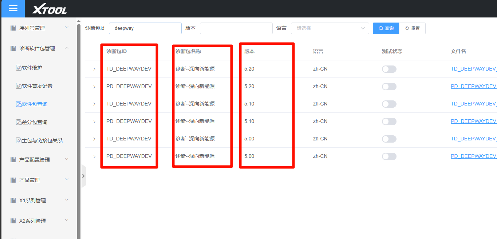
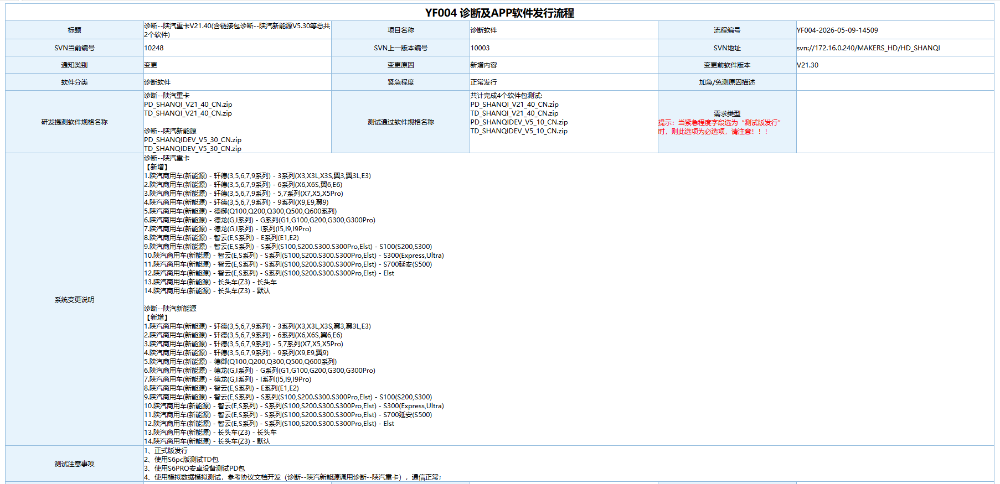

1. 诊断包命名规范(新软件首发)
- 必须使用规范名称。
- 若产品有官方英文名,请优先采用。
⛔ 禁止:在未确认是否存在官方英文名前,直接使用拼音命名。
2. 版本号规范
2.1 递增规则
| 递增粒度 | 适用范围 | 示例 |
|---|---|---|
| +0.1 | 面向所有客户的正式软件版本 | v1.20 → v1.30 |
| +0.01 | 仅用于发给特定客户的内部测试版本 | v1.20 → v1.21 |
⛔ 禁止:将
+0.01 用于通用版本。
2.2 版本号核对流程
⚠ 确定流程前必须登录
http://120.76.60.213:7006/#/SoftVersion
查询当前软件包最新版本。
禁止出现 OA 流程中版本号低于已挂网版本号的情况。
禁止出现 OA 流程中版本号低于已挂网版本号的情况。

3. OA 标题规范
3.1 基本格式
以
软件包管理
中的"软件包名称" + 版本号 组合。
3.2 示例
诊断--一汽解放V21.80
后处理--恒和V21.103.3 备注规则(标题中追加)
| 场景 | 备注格式 |
|---|---|
| 软件首次发行 | 加备注 (首发) |
| 新增语言 | 加备注 (XX语言/几种语言首发) |
| 测试版 | 加备注 (测试版) |
| 单产品、单种类型软件包发布 | 加备注 (DG) / (G3) / (LS) 等 |
📚 其他规范详见:
Wiki - 软件发布 OA 流程规范

4. OA 流程必须包含的下载信息
⚠ OA 流程中必须给出软件包下载网址和包名、版本名。
4.1 示例
软件包下载路径:研发软件·版本管理平台
诊断--陕汽重卡
TD_SHANQI_V21_40_CN.zip
PD_SHANQI_V21_40_CN.zip
诊断--陕汽新能源
TD_SHANQIDEV_V5_10_CN.zip
PD_SHANQIDEV_V5_10_CN.zip5. 提交 OA 流程前的自测
⛔ 必须先自测:提交 OA 流程前,必须到上述网站下载最新软件包并自测。
5.1 自测检查项
- 软件能正常进入(启动无异常)
- 各功能不会闪退
- 文本显示正常,无乱码
6. 流程速记
- 查询挂网最新版本 → 确定本版版本号(
+0.1/+0.01)。 - 按官方英文名(或规范名)命名软件包,禁用拼音。
- 按"软件包名称 + 版本号 + 备注"组合 OA 标题。
- 提交 OA,等待测试 / 审批。
- 审批通过后挂网,完成版本发布。
7. 变更记录
| 日期 | 修改人 | 内容 |
|---|---|---|
| 2026-06-22 | CLOVEN | 初始模板 |
| 2026-06-22 | CLOVEN | 补充:诊断包命名、版本号、OA 标题规范 |